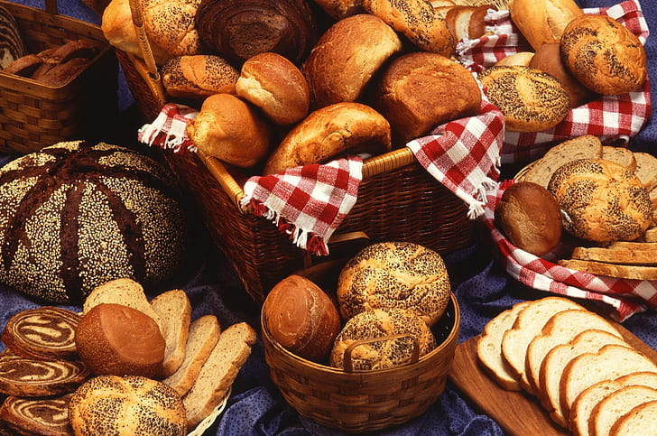

Bread
This website is dedicated to bread.



Cross buns.
E.g., 1000g flour = 100%. 700g water = 70%. Because 700:1000 = 0.7 = 70%. In baker's math the percentage always goes over 100%
A: Most likely the bread is under-proofed. This can lead to a dense and hollow interior.
A: This can happen if the bread is over-proofed.
A: The bread is most likely under-baked, underfermented or there's too much moisture in the dough.
A: The bread is probably over-baked or the oven temperature was too high.
A: The most common causes for this are expired or dead yeast, and liquid that is too cold or hot.
A: The lack of stretching can be caused by low hydration, over-kneading, wrong flour type or inadequate resting time.
A: The dough fails to brown if the oven temperature is too low, or the dough is either over-proofed or under-proofed.